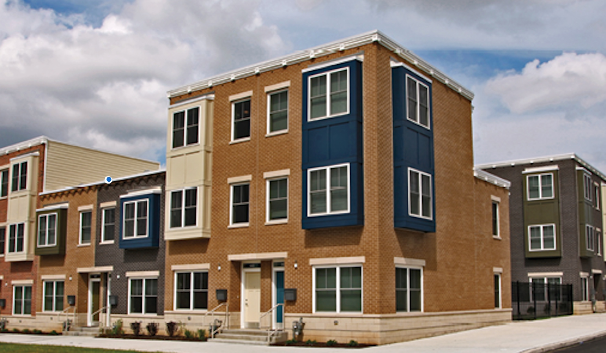
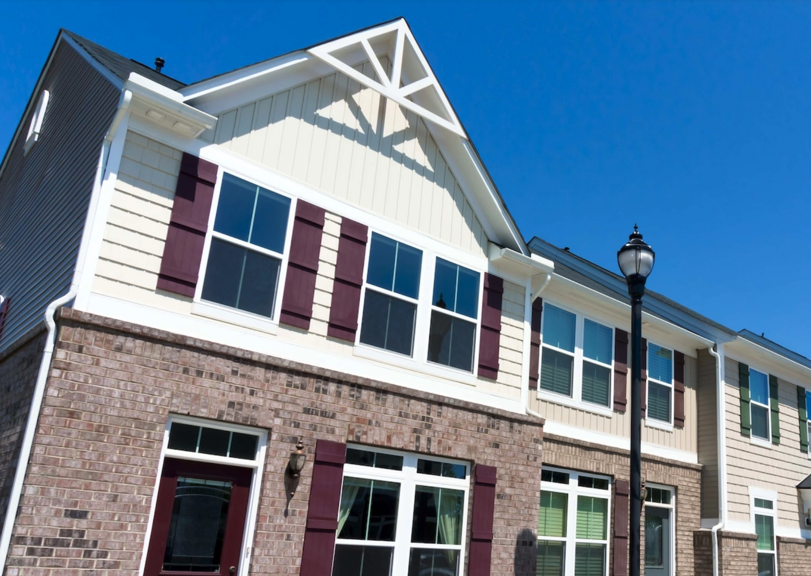
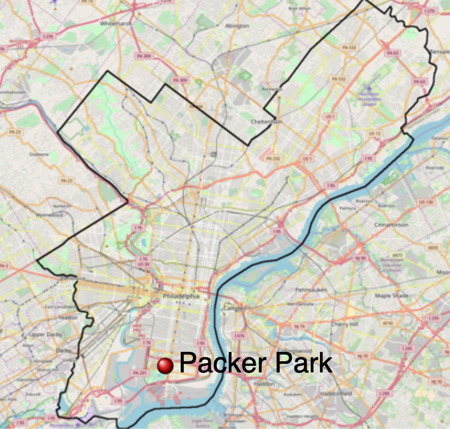
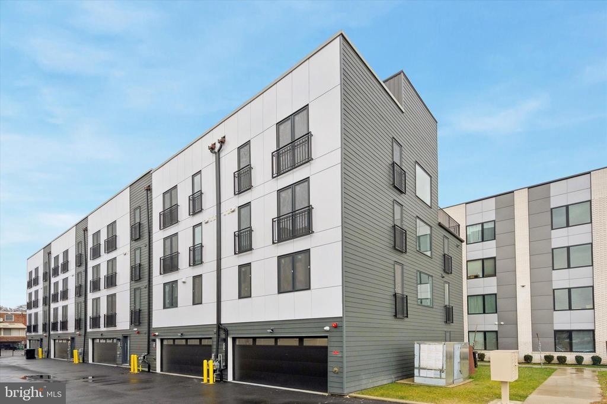
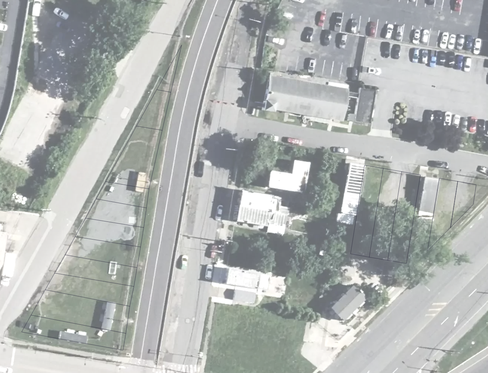

Where Could Philadelphia Build Affordable Housing?
Philadelphia has subsidized housing across the city, but where that housing
is located matters. Some neighborhoods have stronger housing markets and
fewer affordable homes, raising questions about access and future development.
Where is subsidized housing located, and what opportunities might exist for
future development? We’ll begin with the citywide picture before looking
more closely at a neighborhood that may offer an opportunity for affordable
housing construction.
Story map by Shubhanga Satyal

Source:
Philadelphia Housing Authority
Philadelphia’s different housing markets
Philadelphia’s neighborhoods have different housing market conditions.
Classes 1 and 2 represent stronger markets, while classes 4 and 5 represent
weaker ones. Stronger markets tend to attract more private investment because
investors may expect higher returns.
The colors show these differences across the city. Reinvestment Fund
collected and analyzed the data behind this market map. Next, we’ll compare
it with the locations of subsidized housing.
Source:
Reinvestment Fund
Where is subsidized housing?
The dots show subsidized housing projects across Philadelphia. Each dot
represents one project, but projects can have different numbers of units.
Keep that in mind as you look at where the dots are concentrated.
Showing these projects over the market map helps us compare the locations
of subsidized housing with different market conditions.

Source:
Portage Housing
Where are the gaps?
The outlined areas have fewer than 100 dedicated affordable housing units
in this dataset. Majorityof these outlined areas are the stronger housing markets.
This raises a question of sociospatial equity: can people who need
affordable housing access neighborhoods with stronger market conditions?
The map identifies places worth investigating, though unit counts alone
cannot tell us where new housing should be built.
Source:
Philadelphia Today
To explore what development might look like in one of these areas,
let’s turn to Packer Park. Its recent permit activity and vacant parcels
make it a useful neighborhood to examine more closely.
Packer Park
We now move from the citywide map to Packer Park in South Philadelphia.
Its neighborhood boundary appears over the same market map.
Packer Park began with homes built in the 1950s and later expanded
through developments such as Brinton Estates in the 1990s. Today,
we’ll look at what recent permits and vacant-land records might tell
us about opportunities for new housing.

Source:
Wikipedia
Permit locations
This map identifies 19 new construction permit locations in Packer Park
from 2020 onward.
The permits show where new construction has been proposed or authorized.
They give us a way to see where development activity is taking place,
though a permit does not necessarily mean a building has been completed.
One example of new construction
This point shows permit RP-2023-000540. The photograph gives us a closer
view of a building at this location. It helps connect the permit data
on the map to what development can look like on the ground.

Source:
Zillow listing for 1843 Hartranft St #16
1843 Hartranft St #16, Philadelphia, PA 19145
Where is the vacant land?
The highlighted parcels show the available vacant-land. Together with
the permit locations, they help us look at where future development
might be possible.
A vacant parcel is not necessarily for sale or ready for development.
Still, identifying vacant land is a useful first step in finding
potential sites for affordable housing.
One site to investigate
The final parcel is at 1950 W Moyamensing Avenue. Its record identifies
it as vacant commercial land and lists its zoning as CMX-3.
CMX-3 is a commercial mixed-use zoning district that allows multifamily
housing. That makes affordable apartments one possibility to explore,
potentially alongside commercial space.
Could this site support affordable housing? Answering that would require
more research into ownership, zoning requirements, site conditions, and
costs. From a site selection standpoint, its available land and zoning
make it worth investigating further.
From a sociospatial equity standpoint, it is worth investigating whether affordable housing here could give more households access to a neighborhood where they might otherwise struggle to find an affordable home. That matters because where people can afford to live shapes their access to jobs, services, and the opportunities a neighborhood offers.

Source: Screenshot from Mapshaper.
Data Sources:
City of Philadelphia, “City Limits,” OpenDataPhilly, accessed September 24, 2026,
opendataphilly.org/datasets/city-limits/.
City of Philadelphia, “Market Value Assessment (MVA),” OpenDataPhilly, accessed September 24, 2026
opendataphilly.org/datasets/market-value-assessment/ .
City of Philadelphia, “Affordable Housing Production” OpenDataPhilly, accessed September 24, 2026
opendataphilly.org/datasets/affordable-housing-production/ .
City of Philadelphia, “Vacant Property Indicators,” OpenDataPhilly, accessed September 24, 2026,
https://opendataphilly.org/datasets/vacant-property-indicators/.